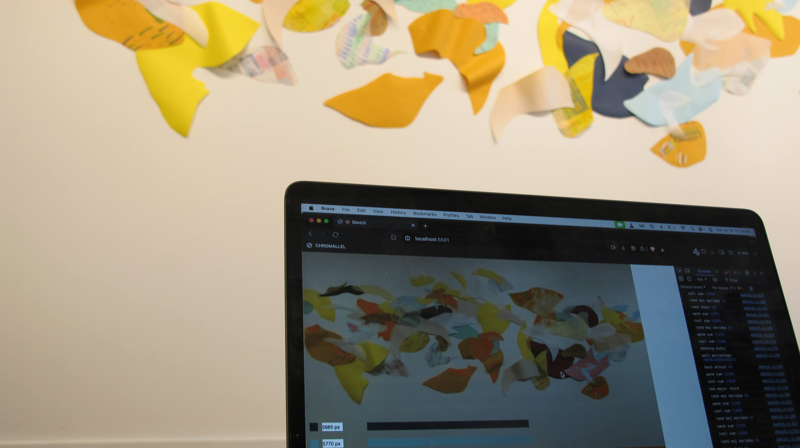
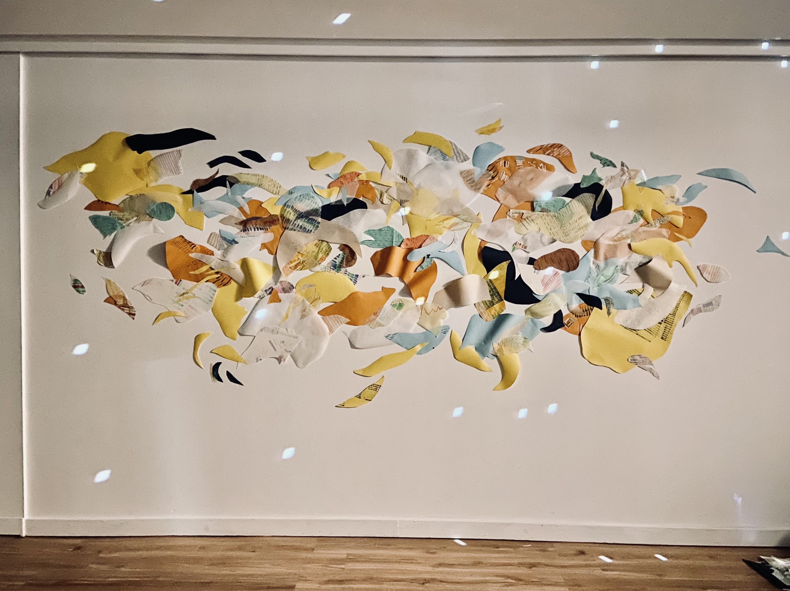
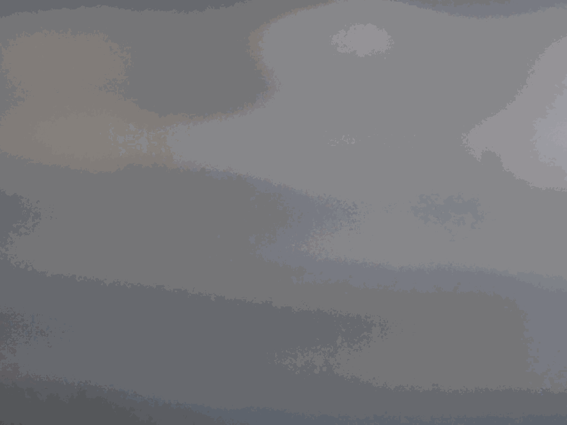
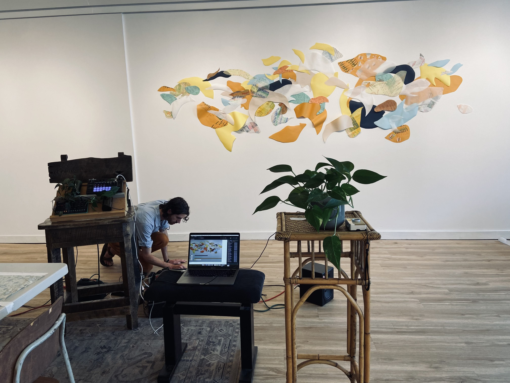
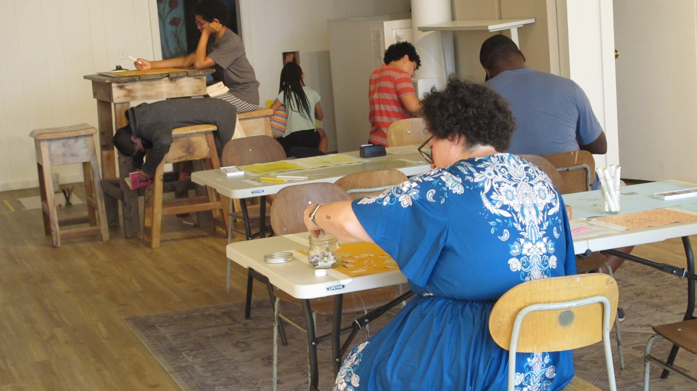
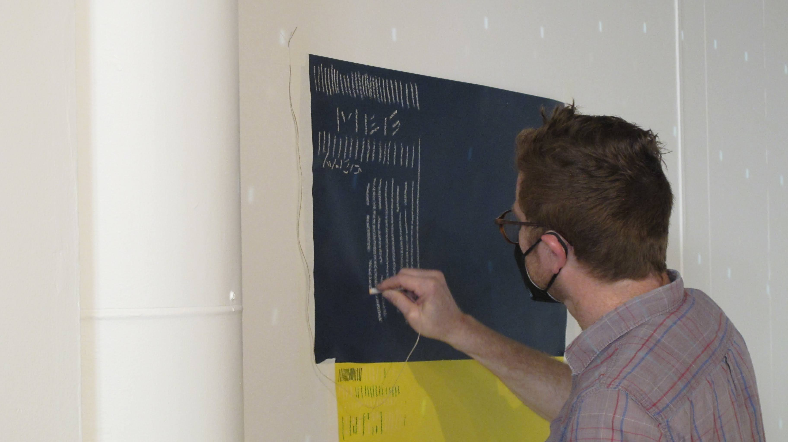

COMMISSIONED BY
The Phoenix Art Gallery and Linden Eller
ROLE
concept, sound design, sonification, programming
ABOUT
"Paralleling" was a community based art mural and sound installation in collaboration with artist Linden Eller at The Phoenix Art Gallery in Waterbury, VT. For a few years now, I have released music under the moniker St. Silva — this project was a chance to bring that music into a physical space and to fuse it with the data work I do.
The exhibit included multiple stations with different materials where participants can experience the reflective, meditative, and playful nature of mark making. As participants made series of hatch marks, Linden used these materials to assemble an intuitive, abstract installation in the gallery.
I was approached by Phoenix curator Joseph Pensak with the idea of providing some soundscapes for the event. After talking with Linden, I was immediately drawn to the evolving, unpredictable nature of the collage taking shape over two days. What colors would she use? How would participants draw their marks? The possibilities felt alive, unknowable. So I proposed that the music do the same.


The result was "Chromallel", an interactive sound installation that watched and responded to the creation process taking place on the wall. The installation used a webcam facing the mural wall. The system would then constantly “watch” for certain colors on the wall. When a color was found, a piece of custom software calculated a list of color totals. This data was then converted to musical parameters and sent from a laptop to some hardware synthesizers, a sort of data sonificaiton, but the data was generated based on computer vision.
You can view a video snippet of the exhibit below. I also wrote a more in-depth writeup of the project on my St. Silva website, which you can read here. Finally, I created two "audio collage" tracks which combined audio from the soundscape alongside sounds from the room (pencil scratches, paper rustling, etc) which are available on Bandcamp. These tracks are not representative of the installation as a whole, but more meant to capture a few interesting moments of transition when "Chromallel" was changing.


